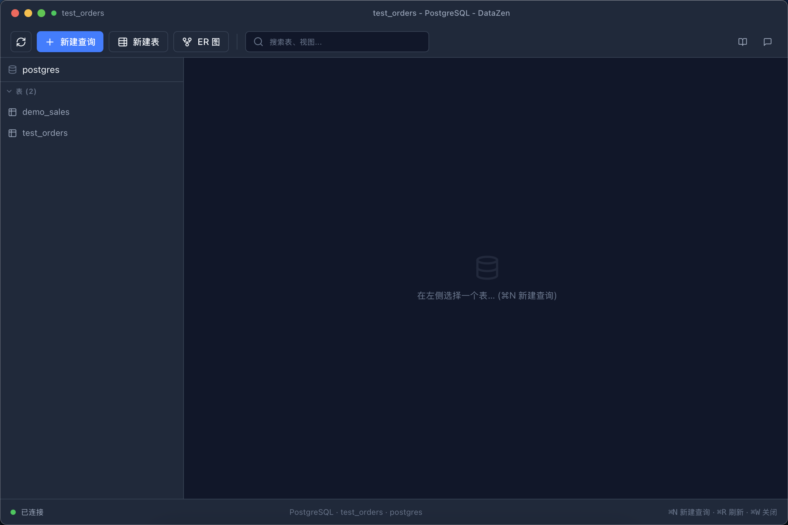
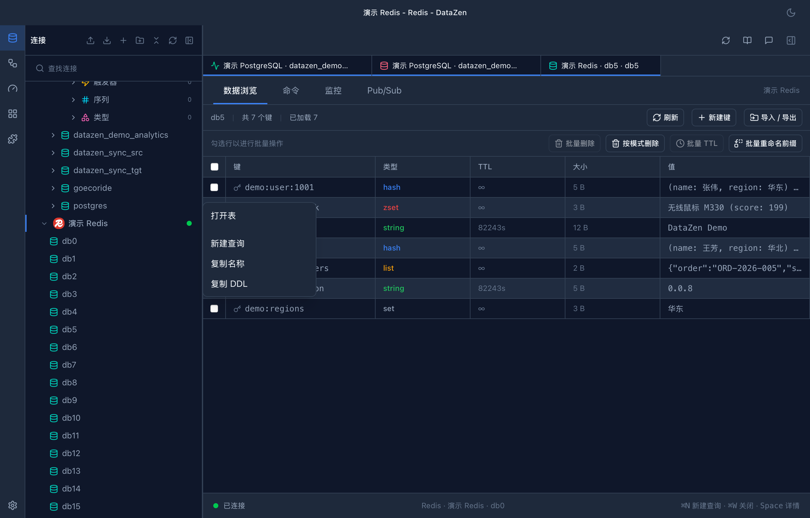

🐘
PostgreSQL
完整 Schema 浏览、EXPLAIN、多库会话、SSL / SSH。
🐬
MySQL / MariaDB
兼容分支，会话级多库切换，数据同步。
🗄️
SQLite
本地文件直接打开，零配置。
⚡
Redis
专属视图：Database 列表 + Key 浏览器，支持全部数据类型。
📡
kiwi
云数据库代理插件，domain 实例语义。
📊
OLAP / Superset
插件驱动：Presto / Trino 分析引擎与数据探索平台。
会话级多数据库
一个连接，浏览所有库
PostgreSQL / MySQL / MariaDB 单个连接即可在侧栏浏览并切换多个数据库；配置了逻辑库名时自动锁定单库，避免误操作。
- Schema 树按库分组，虚拟滚动支持大库
- use_database 级切换，无需重连
- 配置逻辑库名 → 锁定单库（Kiwi 的 domain 字段不参与锁定）

Redis 专属视图
Key 浏览器与安全连接
- Database 列表 + Key 浏览器，支持 String / Hash / List / Set / ZSet / Stream
- 类型与 TTL 一目了然，点开即看字段值
- 内置 SSH 隧道（纯 Rust）、凭据加密落盘、Host Key TOFU 校验
- 连接密码 AES-256-GCM 加密，主密钥入系统钥匙串

ER 图
表关系一目了然
自动生成数据库 ER 图（React Flow 渲染），外键关系、表结构可视化，适合快速理解陌生库。